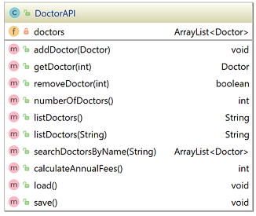

Readme
Assignment is based on materials covered in Programming Fundamentals 2 (with a main focus on Inheritance, Abstraction and Polymorphism). It is worth 50% of your overall grade for the module.
The Assignment
The Medical Council of Ireland maintains a database of doctors practicing in the country. Your task is to develop a scaled-down version of their database of doctors. The menu-driven, console app will be able to handle three types of doctor registration:
- Intern
- General
- Specialist
For each type of doctor, you can add multiple qualifications and for specialists, you can add multiple areas of speciality.
The information entered via the app will be persisted in an XML file.
A suggested menu is:
A suggested file structure is:
Similar(ish) Projects
In your previous labs, you worked on a Shop project and saw an inheritance hierarchy in the Social Network project.
Your assignment will incorporate some concepts from these projects but will require you to develop your own algorithms to solve some of the requirements given to you.
The solution to the Shop V5.0 project can be found here.
The solution to the Social Network V4.0 project can be found here.
utils
We recommend using ScannerUtility (see the Shop project above) for all int and double input. This will ensure a robust application for numeric data entry. Consider also writing two additional methods in this utility class to read a line and also read a char. That way, all of your scanner reads are in one location.
Some key points to remember when coding your assignment
You must use the names given for the Classes and Methods; failure to do so will result in reduced marks.
For all variables, methods and classes used, please adhere to the naming standards discussed in class.
Use internal, helper methods (i.e. private access methods) where appropriate. The interface for your class must match the interface given in the assignment brief. Deviating from the interface will result in reduced marks. Note: the interface here refers to the fields, constructors and methods that are visible outside the class.
Your classes and methods should be Javadoc commented.
Don't forget that you can get IntelliJ to generate methods such as getters, setters, constructors and toString. It is a good idea to generate these methods and then add the additional requirements (such as validation) manually. This will free up some time for concentrating on other areas of the assignment.
There should be absolutely NO System.out.println or Scanner reads in any class except for Driver (and utility classes, if you are using them). If you have any such interaction with the user in any class other than Driver, you will loose marks. Instead, you should be returning information back to Driver to print it. Or passing information read in Driver to other classes via method parameters.
Doctor hierarchy
The classes in the Doctor hierarchy are each described below. Note:
We are not including any validation on the fields in these classes (we are more interested in examining inheritance, abstraction and polymprohism in this assignment).
Use IntelliJ to generate, where applicable, constructors, accessors and mutators methods.
The toString method should return the current object state as well as the object state in any of its super classes.
Doctor
An abstract class that manages common information for a doctor, along with their qualifications. This is the super class of the Doctor hierarchy and also implements the iDoctor interface (see below for details on this interface).
The getFullGender method is a helper method that returns Female if an F is stored, Male if an M is stored and Unknown otherwise. This method is invoked in the Doctor's toString method.
iDoctor
An Interface that is implemented by the Doctor class and has the following method signatures:
double calcRegistrationFee();
String viewContactDetails();The viewContactDetails() method is implemented directly in the Doctor class. This method returns a snapshot of details relating to the doctor (i.e. just the name, address and contact number).
The calcRegistrationFee() method is implemented in all of the concrete classes below.
RegisteredDoctor
An abstract class that manages whether the doctor was qualified in Ireland or not. This extends the Doctor class.
General
A concrete class that stores no additional data but calculates the annual fee owed to the medical council for a regular doctor. The fee is 194 if they were qualified in Ireland and 410 otherwise. This class extends RegisteredDoctor.
Specialist
A concrete class that stores a HashSet of specialisms and calculates the annual fee owed to the medical council. For a specialist, the fee is 425 if they were qualified in Ireland and 641 otherwise. This class extends RegisteredDoctor. The viewContactDetails should be overridden here and, in conjuction with the name, address and contactNumber, the specialisms should be returned.
Intern
A concrete class that stores no additional data but determines the annual fee (flat fee of 310) owed to the medical council for an intern. Note in the diagram above, that the intern doesn't extend RegisteredDoctor as they are still officially in training.
Qualification class
This is a concrete class that manages details relating to a single medical qualification. Use IntelliJ to generate the getters and setters for each field (note: there is no validation required for the fields in this class).
DoctorAPI
This controller class is responsible for storing and managing ALL the doctors entered by the user via the console. Note that there are no System.out.println statements in this class, nor are there any Scanner reads; all the I/O is in the other controller class, the Driver (and the utility classes, if you are using them).

Fields
There is one private field, doctors, which is an ArrayList of Doctor. It should be instantiated at declaration time.
Constructor
We will use the default constructor for this class (no need to code it). For this reason, there is no constructor shown in the diagram above.
Methods (getters and setters)
There are no getter or setter methods for the instance field doctors. Instead, we will use the following methods to manage the ArrayList.
Methods (addDoctor)
This method will add a Doctor object (passed as a parameter) to the ArrayList doctors. There is no validation in this method.
Methods (getDoctor)
This method will return a Doctor object at the location index, which is passed as a paramter. There is some validation in this method:
Check that the passed index exists in the ArrayList:
- if it does exist, retrieve the associated Doctor object and return it.
- if the passed index is not valid, return null.
Methods (removeDoctor)
This method removes a Doctor object at the location index, which is passed as a paramter. There is some validation in this method:
Check that the passed index exists in the ArrayList:
- if it does exist, remove it from the ArrayList and return true.
- if the passed index is not valid, return false.
Methods (numberOfDoctors)
This method returns the number of Doctor objects stored in the ArrayList doctors.
Methods (listOfDoctors, no parameter)
This method is similar-ish to a toString. It builds (and returns) a String of all Doctor objects in the ArrayList. Each object is on a new line. The beginning of the line has the index number of the object in the ArrayList e.g.
If there are no songs in the ArrayList, the following message should be returned: No doctors stored.
Methods (listOfDoctors, String parameter)
This method is used when reporting on doctors by category. It builds and returns a list of doctors (and their associated index number in the ArrayList) by either Intern, Specialist or General. Each doctor object should be on a new line. Sample output would be:
If there are no doctors of the chosen type, return a message stating No doctor-type doctors stored.
Methods (searchDoctorsByName)
This method builds (and returns) an ArrayList of doctors containing all the Doctor objects whose name matches the String entered by the user.
Note: cater for case sensitivity in your searches i.e. Siobhan, SIOBHAN and siobhan should be considered the same for search purposes.
Methods (calculateAnnualFees)
This method adds all the fees for each doctor stored in the doctors ArrayList.
Methods (save)
This method saves all Doctor objects from the ArrayList songs to an XML file doctors.xml. You can use the xstream component for this (like we did in class) or any approach you wish.
Methods (load)
This method loads all saved Doctor objects back into the program (i.e into the ArrayList doctors) from the XML file doctors.xml. You can use the xstream component for this (like we did in class) or any approach you wish.
Driver class
The responsibility of the Driver class is to run the app and perform I/O with the user.
In this class, create an object of the DoctorAPI class. Hint: use the ShopV5.0 driver as a guide for completing this class.
Menu
A suggested menu is:
When writing this class, the above menu is just a suggestion. You may deviate from this menu if you wish. If you provide more elaborate menu items/reports, you will need to add more methods to the DoctorAPI class; remember, avoid the temptation to make the ArrayList in DoctorAPI public as this would break encapsulation rules.
If you do deviate from the suggested menu, ensure that you still have the following basic elements on the menu:
- CRUD on the Doctor list
- CRUD on the specialisms HashSet
- reporting and
- persistence
For more direction, please refer to the rubric in the indicative marking scheme tab to see how we are grading the Driver class, the DoctorAPI class and the JUnit testing of the DoctorAPI class. In particular, please note that 100% in this assignment will require you to provide some methods in DoctorAPI with associated menu items in Driver beyond what we have outlined in this spec. These additional methods will also need to be JUnit tested.
A note on I/O
Aside from the ScannerInput class (if you are using it), this class should be the only class that has:
- System.out.print statements
- Scanner objects defined.
JUnit
In the first assignment, we supplied a number of JUnit Test Classes:
We also provided the steps (included below) that showed you how to incorporate these test classes into your assignment.
JUnit Task in this Assignment
For this assignment, use the ArtistListTest and SongListTest classes as a template and write a test class for DoctorAPI.
Assignment 1: Creating a Test Folder
In your IntelliJ project, right click on your project name. When the context menu appears, select New --> Directory. Call the new directory test.
Note that the src folder is blue in colour and the test one is grey:
We need to 'mark' this directory as a test source folder. To do this, right click on the new test folder and when the context menu appears, select Mark Directory as --> Test Sources Root:
Your test directory should now be green in colour.
Assignment 1: Creating a test class
Right click on the test folder and choose New --> Java Class. Give the class the name, SongTest.
Delete any generated code in your new class and paste this code into it instead.
You will notice that a lot of errors exist in relation to the JUnit imports annotations and the assert methods:
We need to add JUnit to our classpath so that these imports and methods can be recognised. To do this, click on one of the JUnit imports that is causing an error. Click on the red lightbulb that appears and then select Add Junit4 to Classpath:

Your test class should have no syntax errors now (assuming you have writen all the methods in the class and followed all of our naming laid out in the assignment).
Assignment 1: Running your test class
To run the test class, right click on the test folder and select Run --> All Tests.
A new window will appear, reporting the results of the tests. In our case here, all our tests passed:
If you have failing tests, the output could look something like this:
Submitting your assignment
When you are ready to submit your assignment:
Rename your project folder using the naming convention firstname_surname e.g. siobhan_drohan.
Zip this folder ensuring that it is called firstname_surname.zip. No WINRARs please!
The deadline for this assignment is the end of the Easter holidays 10 pm Friday 26th April, 2019.
Interview Schedule
It is compulsory that you are interviewed on your submission in order to demonstrate both Understanding and Authorship.
Interviews will take place after the Easter break. However, if you would like to have an early interview in week 12, please make your lecturer aware of this. If you do avail of an early interview, you will have to submit your assignment on the day of your interview.
Following the submission date, we will email out (via Moodle) an interview schedule. Before the Easter break, we will let you know which day the interviews will be taking place.
Indicative Marking Scheme
The marking rubric for the assignment is:
We have a marking spreadsheet that corresponds directly to this rubric, so make sure that you are constantly reviewing your progress by re-visiting this rubric.
Extra Credit
Extras - 10% will be available to include extras like robust error handling, a good UX, etc. This 10% is only available if all other functionalities are attempted and will bring your mark to a maximum of 100%.
Interviews
The grade for the interview is a multiplier for your assigment grade. Should you fail to show for your interview, you will receive zero, resulting in an overall grade of zero for your submission.